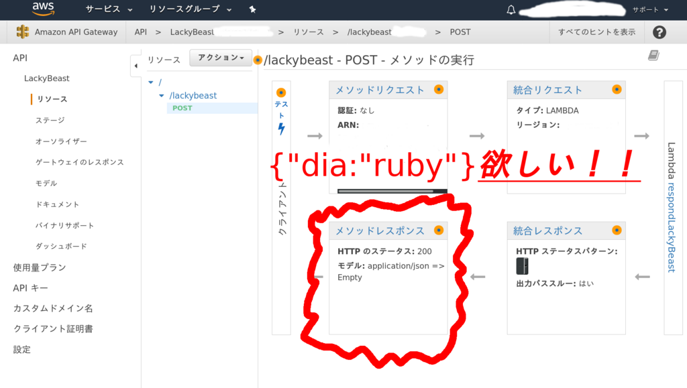
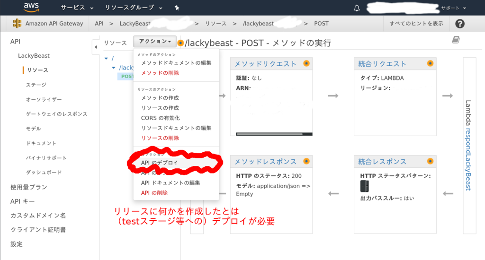

AWSのAPI Gatewayで、受け取ったjsonパラメータをそのまま返すechoサーバをリリースに定義したのだけど、 それに対するAPI Gateway上でのテスト行うのはうまくいくのに、 下記のような手元からのcurlコマンドはうまくいかない。
$ curl \
-H 'x-api-key: xxxxxxxxxxxxxxxxxxxxxxxxxxxxxxxxxxxxxxxx' \
-d '{"dia":"ruby"}' \
-H 'Content-Type: application/json' \
-X POST \
'https://xxxxxxxxxx.execute-api.yyyyyyyyyyyyyy.amazonaws.com/test/lackybeast'
{"message":"Internal server error"}とても恐ろしい集団心理である…
- 「
{"dia":"ruby"}！{"dia":"ruby"}はまだか！！」 - 「なぜ出来ない！！！ 一体どうなってるんだ！！！」
- 「エラーレスポンスが、お粗末すぎるぞォーー！！！！！」
- 「早く…
{"dia":"ruby"}をくれ…」
なぜなら、もうお分かりだろう。
誰も…デプロイをしていないのである！！
- 「誰か早く
{"dia":"ruby"}を返してくれー！！ 正常なjsonレスポンスを！！ 誰かーー！！」
リリースをステージにデプロイしていないのである！！！！！

- 「どうしてー！！ API Gatewayは何をしているのーー！！ 早く成功レスポンス返してー！ お願いー！！」
こう、泣きながら叫んでいるエリちゃんでさえ。
誰も！！ 誰もデプロイをしていないのである！！！

どこがInternal server errorやねん。
参考ページ
この記事はこちらから修正リクエストを送ることができます。
AWS API Gatewayのリソースを作成したらステージへのデプロイが必要 - github
ゴミ箱ボタンの左にある、鉛筆ボタンを押してね！